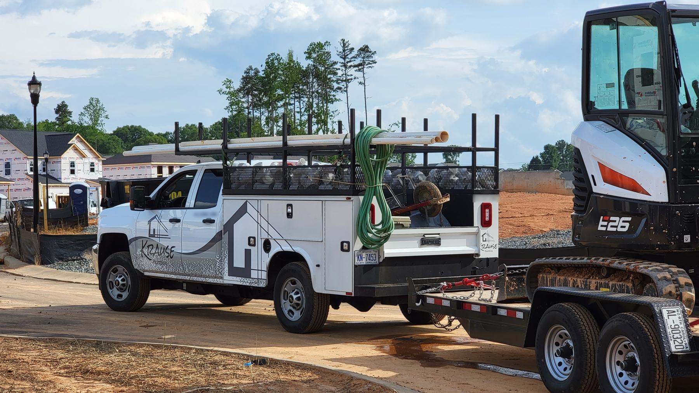
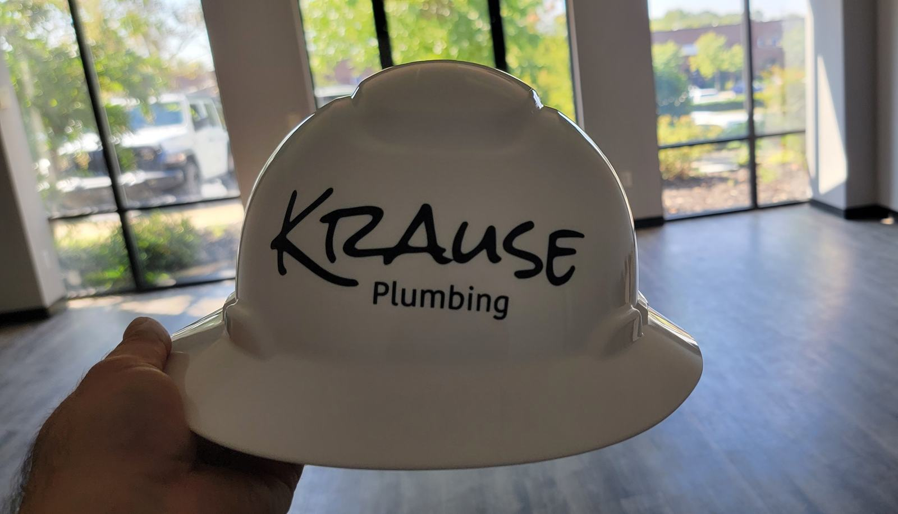
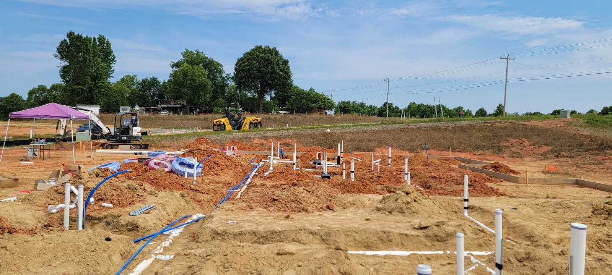
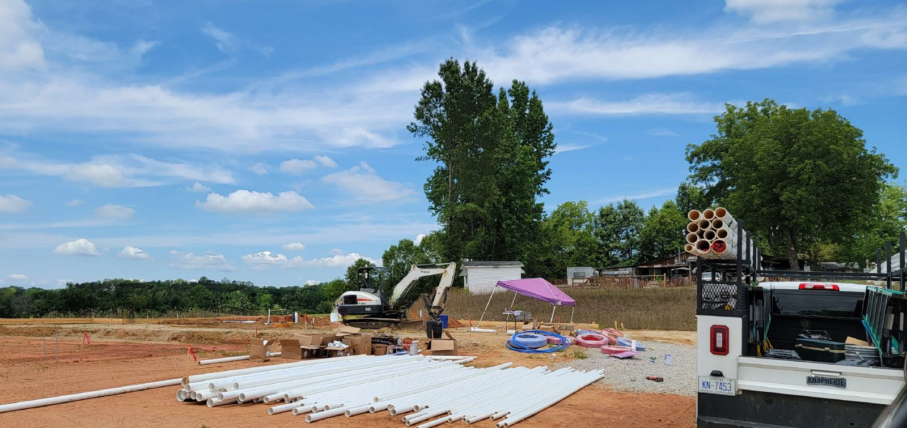
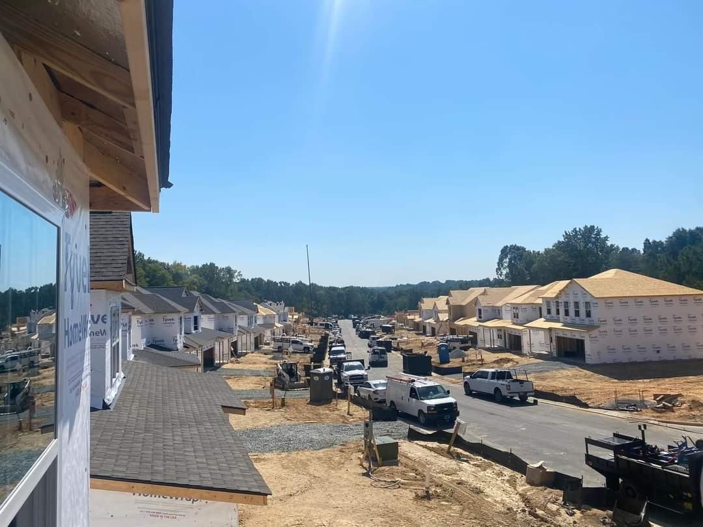

About Krause Plumbing
Plumbers in Davie County, Charlotte & Concord
Based in Davie County, serving Davie County, Charlotte and Concord.
Our story
[Owner / family story: who started Krause Plumbing, when, and why. Confirm owner name with the client]
We handle drain cleaning, hydro-jetting, sewer camera inspections and frozen or burst pipes.
[Team: names, roles, years of experience]
Where we work
Krause Plumbing provides plumbing services only in North Carolina, in Davie County, Charlotte and Concord. This website is not intended to offer services in California or the European Economic Area.

On the job



Drain acting up? Let's fix it.
Call now or book online.